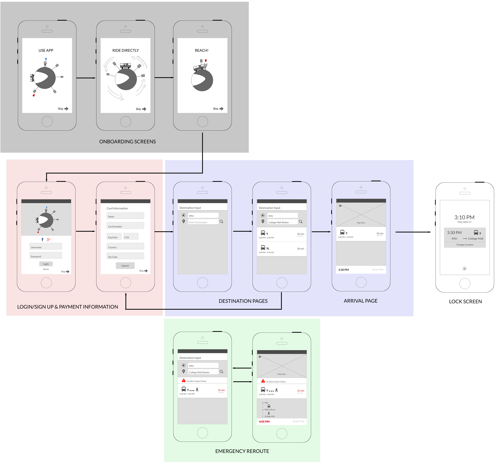

The Problem
Public transportation bus drivers don’t have a reliable system to communicate effectively with each other and with dispatch, while the passengers suffer long wait times due to low frequency of buses in small cities.
Approach
User interviews, field observation, affinity diagraming and bodystorming.
My Role
I organised the workflow of the team and supervised the Concept Sketching and Prototyping phases.
Every team member shared an equal amount of work during every stage of the design process.The Team
- Pavithra Ramamurthy - Prototyping and Concept Sketching
- Philip Begel - Usability Testing and Presentation
- Peggy Lu - User Research
- Sanjana Mathur - Design Documentation
Solution
Each bus would operate on its designated route till an infrastructural breakdown, during which the autonomous system would create a new route for the buses to cover before they can loop back to their normal routes.
The Process
Mercedes Benz’s Research and Development was ready to launch a fleet of autonomous vehicles ranging from private vehicles such as cars to a variety of public transportation vehicles such as buses, trucks and taxis. Each vehicles also brought a range of considerations and setback issues such as safety, trust, ethics, control and efficiency. Mercedes Benz wanted us to pick one of their vehicles and come up with a design solution that speaks to these very specific problems.
Where we looked…
We wanted to gain clear understanding of what autonomous vehicles were, the capabilities of an autonomous vehicle and an up to date information of where the current trends of autonomous vehicles stood in terms of usage, applicability and feasibility as a mainstream product. We began by aggregating and studying articles on autonomous vehicles, with currently existing autonomous features (e.g. cruise control, automatic parking, pedestrian and vehicle detection, etc.) as well as autonomous vehicles that are being tested such as Mercedes Benz CityPilot Bus, Self-driving Uber, Google Self-driving Car, Tesla’s Model S auto pilot, etc. We also conducted research on the disruptive issues that are floating in the market surrounding autonomous vehicles through articles and writings including Batya Friedman (Professor in the Information School at the University of Washington) and Steven Shladover, a researcher at the Partners for Advanced Transportation Technology at the University of California, Berkeley.
With the information we gained, we performed a rigorous phase of affinity diagramming detailing the problems that we felt were consistent with autonomous vehicles and normal buses in general. We made several assumptions based on our own experiences of taking public buses in different locations inside USA.
We mapped out several problematic areas but to validate these problems based on our text book research and assumptions we decided to split up and interview our users.
Whom we spoke to…
Based on our initial assumptions we began speaking to
We constrained our initial design to Bloomington, Indiana since our users were most easily accessible within this geographical constraint. Bloomington is a college town in Indiana where the primary passengers comprises of graduate and undergraduate students. The rest of the users were a combination of instructors, office workers and shopkeepers. This constraint later helped us pay attention to specific problem areas of small city commutes.
We did a round of the city bus stops, both in popular and less popular routes and spoke to a dozen passengers. Our questions to our users were wide in variety such as what was their personal choice of transportation?, Why did they ride the bus services?, How did their commuting experience change through the day? Did they find their commute to be pleasant? Why and Why not?
We synthesized our findings based on our initial research through a round of meticulous mind mapping.
The best part of the design process is when you can take the key insights and visualise different ways of solving the problem. The team and I got together and went over several rounds of
- The users weren’t ready to fully trust an autonomous bus system yet.
- The current road systems and city layout aren’t designed to accommodate autonomous buses within the constraints of its current infrastructure.
- A fully functional autonomous vehicle would probably become a common mode of transportation much into the future, so it is impossible to accurately imagine how a smart city might have developed to accommodate it.
We realised that we needed to look into the near future and design to smartly integrate the autonomous capabilities in stages.
We split up again and began talking to the other set of primary users of a regular bus system,


In our interviews with the drivers we asked them to give us an idea of what a normal day of work looked like, what their schedules were like, how they made decisions during delays or increase in traffic or emergencies, when they get to take breaks, their shift hours, etc. We also asked each of them to walk us through the controls on a driver’s console to help us understand their experience a little better.
The
- Drivers are constantly multitasking between driving, communicating with dispatch and other drivers, checking for crowding inside the bus, checking for schedule delays and requests for passenger stops. This gets very difficult to manage and increases risk on the road.
- Bus drivers heavily rely on communicating with dispatch for reroutes and emergency situations. This coordination usually takes time due to the manual nature of the communication process.
- Because dispatch is often another driver or different people every time, there is no protocol or consistency and drivers generally feel that dispatch is unreliable. Often the bus drivers make decisions on the go or by manually coordinating on the radio.
- During delays or overcrowding, bus drivers use hand gestures to communicate with people at a stop to convey that they would be picked up by the next bus instead.
Our interviews and observations gave us enough lead to build our
Based on our key findings we were able to pull specific insights that helped us conceptualize a possible solution for the main problems that we recognised.
We needed to figure how we could use Mercedez Benz’s autonomous vehicle features to solve for these very particular problem spaces.
We began the round robin sketching process again! We had potentially explosive ideas from our exploration before, but now we were focusing on funneling down to the core aspect of solving the problem. At the end of the process we had a concrete idea that all of us wanted to explore and test.
//StoryBoard//During our initial round of testing phase we walked our testers, both passengers and drivers through concept scenarios and specific situations to judge their responses. We also involved the testers in task based interactions using paper prototypes to record the usability of the interface itself.
What we found…
From testing passengers we realised that there was a certain learning curve to the interface. The passengers tended to think that the interface just provided a real time update of when their bus would arrive. They didn’t recognise that the bus was prioritising stops based on user demands till they rode the bus. Nevertheless, they liked the fact that they got realtime updates of the bus arrival times.
In our initial design of the driver’s interface, we had a visual map that would indicate route changes and allocated stops. While usability testing our design with our drivers we realised that the map interface showing priority stops along route can be a safety hazard if driver has to take quick looks at it.
What more, the drivers are already aware and knowledgeable about different bus routes and streets, in which case a visual navigation system may be unnecessary.
We
Based on these modifications we would like to run further high fidelity usability tests on a focused community utilising one or two bus lines while using a Mercedes Benz’s centrally controlled infrastructure to optimise the autonomous prioritisation.
We want to design for current infrastructure and put a better system in place in the coming years. And eventually fluidly transition from some specific autonomous functions (ie automated route-passenger prioritization system) to semi-autonomous aided functions (ie the prior system with autopilot) to fully autonomous (fully self driving incorporating the proposed system).

The Team
What I Learnt
- User experience designing is never a linear process and the users can help you validate your concept every step of the way
- Ask questions, lots and lots of questions on every aspect of the problem space. Record these questions and work with your team to answer all of them throughout the design process. Then ask more questions.
- Design iteratively and be ready to chuck your ideas and go back to phase one if necessary.